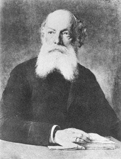

Os gases nobres são elementos químicos da família 18 da tabela periódica, conhecidos por sua baixa
reatividade devido à camada de elétrons completa.
Incluem hélio, neônio, argônio, criptônio, xenônio e radônio, sendo estáveis e pouco propensos a formar
compostos.
São utilizados em aplicações como iluminação, soldagem e pesquisas científicas devido às suas
propriedades inertes.
Exemplos:
Metal Alcalino
Os metais alcalinos pertencem à família 1 da tabela periódica e são conhecidos por sua alta reatividade,
especialmente com a água, formando hidróxidos e liberando hidrogênio. São metais macios, de baixa
densidade e pontos de fusão baixos, sendo armazenados sob óleo para evitar reações com o ar.
Utilizados em baterias, produção de sabão e em reações químicas industriais.
Exemplos:
Metal Alcalino-Terroso
Os metais alcalino-terrosos são elementos da família 2 da tabela periódica, menos reativos que os
alcalinos, mas ainda assim reagem facilmente com água e oxigênio. São mais duros e densos que os
metais alcalinos, com pontos de fusão mais elevados. São usados em ligas metálicas, fogos de
artifício e na produção de cimento.
Exemplos:
Metal de Transição
Os metais de transição ocupam o bloco central da tabela periódica (famílias 3 a 12) e são conhecidos por
apresentarem múltiplos estados de oxidação e formarem compostos coloridos. Possuem boa
condutividade elétrica e térmica, além de serem maleáveis e dúcteis. São fundamentais na
indústria, usados em catalisadores, moedas e ligas metálicas.
Exemplos:
Semimetal
Os semimetais apresentam propriedades intermediárias entre metais e ametais, podendo conduzir
eletricidade em determinadas condições. São usados principalmente em dispositivos eletrônicos,
como transistores e diodos, devido ao seu comportamento semicondutor. Geralmente são frágeis e
possuem brilho metálico.
Exemplos:
Ametal
Os ametais são elementos que geralmente não conduzem eletricidade nem calor, apresentam baixa densidade
e não possuem brilho metálico. Podem estar presentes nos estados sólido, líquido ou gasoso à
temperatura ambiente. São essenciais para a vida e para diversos processos industriais.
Exemplos:
Hidrogênio
O hidrogênio é o elemento mais simples e abundante do universo, composto por apenas um próton e um
elétron.
Ele é incolor, inodoro e altamente inflamável, sendo essencial em processos químicos e
energéticos, como a formação da água e a produção de energia limpa. Além disso, possui potencial como
fonte de combustível sustentável devido à sua capacidade de gerar energia sem emitir poluentes.
Hélio
O hélio é um gás nobre incolor, inodoro e não inflamável, sendo o segundo elemento mais abundante no
universo.
É conhecido por sua baixa densidade e por ser usado em balões e dirigíveis, além de aplicações
criogênicas e na ressonância magnética.
Por ser quimicamente inerte, não forma compostos facilmente, tornando-o seguro para diversas aplicações
científicas e industriais.
Lítio
O lítio é um metal alcalino leve e macio, sendo o elemento sólido mais leve da tabela periódica.
Amplamente utilizado em baterias recarregáveis, ele revolucionou a tecnologia de dispositivos
eletrônicos e veículos elétricos.
Também tem aplicações na psiquiatria, como estabilizador de humor, e na produção de ligas metálicas
resistentes.
Carbono
O carbono é a base da vida na Terra, presente em todas as moléculas orgânicas e com uma incrível
capacidade de formar diversas estruturas.
Existe em várias formas alotrópicas, como grafite, diamante e grafeno, cada uma com propriedades únicas.
Sua versatilidade o torna essencial na indústria, na tecnologia e até mesmo na medicina.
Nitrogênio
O nitrogênio é um gás inerte que compõe cerca de 78% da atmosfera terrestre, sendo essencial para a
vida.
É um componente fundamental de proteínas e DNA, além de ser usado na produção de fertilizantes e na
conservação de alimentos.
Na forma líquida, é utilizado em criogenia e em procedimentos médicos e industriais.
Oxigênio
O oxigênio é um elemento vital para a respiração dos seres vivos e um dos mais abundantes na Terra.
Presente na água e no ar, é essencial para a combustão e para processos biológicos, como a produção de
energia celular.
Também é utilizado na medicina, na indústria e até mesmo em sistemas de suporte à vida no espaço.
Flúor
O flúor é o elemento mais eletronegativo da tabela periódica, altamente reativo e encontrado
principalmente em minerais.
É amplamente utilizado na odontologia, na forma de fluoreto, para fortalecer os dentes e prevenir
cáries.
Também é essencial na produção de plásticos, como o Teflon, e em processos industriais, como o
enriquecimento de urânio.
Sódio
O sódio é um metal alcalino altamente reativo, conhecido por seu papel fundamental na biologia e na
indústria.
Presente no sal de cozinha (cloreto de sódio), é essencial para o funcionamento dos nervos e músculos.
Também é usado em lâmpadas de vapor de sódio, na produção de sabões e em processos químicos industriais.
Magnésio
O magnésio é um metal leve e resistente, essencial para a vida e amplamente utilizado em ligas
metálicas.
Desempenha um papel crucial na fotossíntese e na saúde humana, sendo importante para ossos e músculos.
Na indústria, é usado em fogos de artifício, automóveis leves e até mesmo em laptops e smartphones.
Alumínio
O alumínio é um metal leve, resistente à corrosão e amplamente utilizado em embalagens, construção e
transporte.
Sua reciclabilidade o torna um material sustentável, presente em latas, aviões e estruturas
arquitetônicas.
Também é usado em cabos elétricos e na produção de espelhos telescópicos devido ao seu alto poder
reflexivo.
Fósforo
O fósforo é um elemento essencial para a vida, presente no DNA, no ATP e em fertilizantes agrícolas.
Existe em formas alotrópicas, como o fósforo branco (altamente reativo) e o fósforo vermelho (usado em
fósforos de segurança).
Sua escassez em alguns ecossistemas pode limitar o crescimento de plantas, tornando-o crucial para a
agricultura.
Enxofre
O enxofre é um elemento amarelo e brilhante, essencial para a produção de aminoácidos e vitaminas.
Usado na fabricação de pneus, ácido sulfúrico e fertilizantes, também é encontrado em fontes termais e
vulcões.
Seus compostos têm odor característico, como o cheiro de ovo podre (sulfeto de hidrogênio).
Cloro
O cloro é um gás amarelo-esverdeado altamente reativo, essencial para o tratamento de água e
desinfecção.
Presente no sal marinho (cloreto de sódio), é usado na produção de plásticos, como o PVC, e em produtos
de limpeza.
Embora tóxico em sua forma pura, seus compostos são vitais para a saúde pública e a indústria química.
Ferro
O ferro é um metal fundamental para a civilização, usado em construções, ferramentas e na produção de
aço.
É essencial para a vida, sendo um componente central da hemoglobina, que transporta oxigênio no sangue.
Sua abundância na crosta terrestre e suas propriedades magnéticas o tornam indispensável na tecnologia
moderna.
Níquel
O níquel é um metal resistente à corrosão, amplamente utilizado em ligas metálicas, como o aço
inoxidável.
Presente em baterias recarregáveis (níquel-cádmio e níquel-metal hidreto), também é usado em moedas e
revestimentos.
Sua capacidade de resistir a altas temperaturas o torna valioso na indústria aeroespacial.
Cobre
O cobre é um metal altamente condutor, essencial para a eletrônica, fiação elétrica e sistemas de
telecomunicação.
Foi um dos primeiros metais utilizados pelo homem, presente em moedas, instrumentos musicais e obras de
arte.
Suas propriedades antibacterianas também o tornam útil em superfícies hospitalares e sistemas de água
potável.
Ouro
O ouro é um metal precioso, resistente à corrosão e altamente valorizado em joias, eletrônicos e
investimentos.
Sua excelente condutividade elétrica o torna essencial em componentes eletrônicos de alta precisão.
Além de seu uso monetário ao longo da história, é aplicado na medicina, como em tratamentos de artrite
reumatoide.
Urânio
O urânio é um elemento radioativo usado como combustível em usinas nucleares e na produção de armas
atômicas.
Seu isótopo U-235 é fissionável, liberando grandes quantidades de energia, enquanto o U-238 é mais
estável.
Apesar de sua controvérsia, a energia nuclear baseada em urânio é uma fonte significativa de
eletricidade em muitos países.
Arsênio
O arsênio é um elemento tóxico, conhecido por seu uso histórico em venenos e sua presença natural em
águas subterrâneas.
Embora seja um veneno potente, tem aplicações na indústria eletrônica (como em semicondutores) e na
medicina (tratamento de certas leucemias).
A contaminação por arsênio em água potável é um grave problema de saúde pública em várias regiões do
mundo.
Antoine Lavoisier
Gravura de Antoine Lavoisier
Antoine Lavoisier foi um químico francês do século XVIII, conhecido como o "pai da química moderna".
Ele estabeleceu a Lei da Conservação das Massas, identificou o oxigênio e o hidrogênio, e ajudou a
reformular a nomenclatura química.
Suas contribuições foram fundamentais para a revolução científica, embora sua carreira tenha sido
interrompida durante a Revolução Francesa, quando foi executado.
Dmitri Mendeleev
Дми́трий Менделе́ев
Fotografia de Dmitri Mendeleev
Dmitri Mendeleev foi um químico russo do século XIX, famoso por desenvolver a Tabela Periódica dos
Elementos.
Ele organizou os elementos químicos em ordem crescente de massa atômica, prevendo as propriedades de
elementos ainda não descobertos.
Sua tabela periódica tornou-se um marco na química e continua sendo essencial para o estudo dos elementos.
Friedrich Kekulé

Gravura de Friedrich Kekulé
Friedrich Kekulé foi um químico alemão do século XIX, mais conhecido por sua descoberta da estrutura do
benzeno em forma de anel.
Ele propôs que os átomos de carbono podiam formar cadeias e estruturas cíclicas, revolucionando a química
orgânica.
Suas ideias foram fundamentais para o desenvolvimento da teoria estrutural dos compostos orgânicos.
Michael Faraday
Fotografia de Michael Faraday
Michael Faraday foi um renomado cientista britânico do século XIX, considerado um dos maiores
experimentalistas da história da física e química.
Ele fez descobertas fundamentais no eletromagnetismo, como a indução eletromagnética e as leis da
eletrólise, revolucionando a ciência e a tecnologia.
Além de suas contribuições científicas, era conhecido por suas habilidades didáticas e por popularizar a
ciência por meio de conferências públicas.
Humphry Davy
Retrato de Humphry Davy
Humphry Davy foi um importante químico britânico do final do século XVIII e início do XIX, pioneiro no campo
da eletroquímica.
Ele ficou famoso por suas descobertas de vários elementos químicos, incluindo o sódio, potássio, cálcio e
magnésio, através da eletrólise.
Davy também inventou a lâmpada de segurança para mineiros (lâmpada de Davy) e foi mentor de Michael Faraday,
além de ser um popular conferencista na Royal Institution.
Jöns Jacob Berzelius
Retrato de Jöns Jacob Berzelius
Jöns Jacob Berzelius foi um renomado químico sueco do século XIX, considerado um dos fundadores da química
moderna.
Ele desenvolveu a notação química moderna, introduzindo os símbolos dos elementos (como H, O, C) e os
conceitos de fórmulas químicas, além de descobrir novos elementos como o silício, selênio e tório.
Berzelius também foi pioneiro no estudo da eletroquímica, cunhou os termos "catálise" e "proteína", e
estabeleceu a teoria do dualismo eletroquímico, influenciando gerações de cientistas.